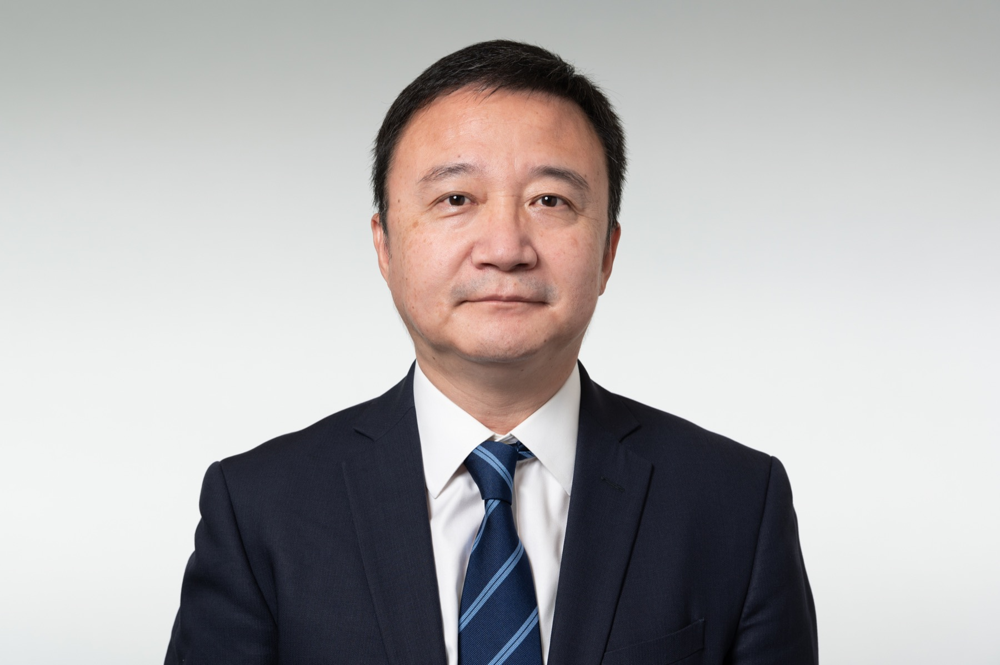

Professional credential
FIA
Fellow of the Institute and Faculty of Actuaries
Chen Liu, FIA
I help insurers and stakeholders understand complex actuarial results across BMA, IFRS 17, economic capital, and market-consistent valuation.

Professional Profile
I am a Fellow of the Institute and Faculty of Actuaries with experience across Hong Kong and the UK life insurance markets. My work has covered BMA Economic Balance Sheet reporting, IFRS 17 implementation, HKRBC and BSCR reporting, Solvency II valuation, economic capital, model validation, audit support, and actuarial process transformation.
Professional credential
FIA
Fellow of the Institute and Faculty of Actuaries
Core reporting focus
BMA
EBS, BEL, BSCR, solvency movement analysis
Implementation experience
IFRS 17
Systems, UAT, OBS, BRD review and validation
Market perspective
HK & UK
Life insurance reporting, capital and product operations
What I Do
Lead and review BEL, BSCR, EBS and solvency analysis, with emphasis on movement explanations, expectation setting, and management communication.
Support system architecture, business requirements, ETL and subledger UAT, Prophet model updates, validation approach and financial impact analysis.
Apply ESG, stochastic modelling and option/guarantee valuation techniques across economic capital, Solvency II and with-profits reporting contexts.
How I Work
Good reporting starts before the final model output arrives. I build expectations from economics, business events, assumptions and management actions, then test the result against that view.
My style is direct, analytical and practical: fewer decorative charts, more explanation of what changed, why it matters, and what should be watched next.
I am comfortable working across actuarial, finance, investment, risk, audit and senior management audiences.
Selected Experience
Lead BMA solvency reporting, monitor BEL and BSCR results, perform solvency movement analysis, support IFRS 17 implementation, and coordinate with Finance, Investment, Risk Management and governance committees.
Managed actuarial consulting projects covering capital and financial reporting processes, IFRS 4 and US GAAP reporting support, business forecasting, process transformation and market analytics.
Supported unit-linked product operations, product illustration inputs, unit pricing, fund changes, compliance reporting, governance improvements and stakeholder coordination across investment, risk, legal and fund management teams.
Delivered life actuarial audit and advisory projects, including year-end audit support, Solvency II Standard Formula process development, QRT process review, ALM framework review and operational risk modelling review.
Worked on economic capital, Solvency II liability valuation, SCR analysis, ORSA-related modelling, with-profits realistic balance sheet reporting, experience investigations, assumption reviews and reporting process acceleration.
Credentials
Professional Service